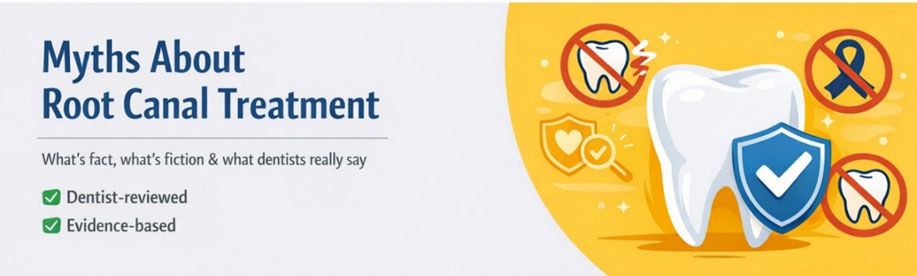

Root canal treatment is one of the most misunderstood dental procedures. Over the years, outdated information, fear-based stories, and misinformation have created unnecessary anxiety around a treatment that is actually designed to relieve pain and save natural teeth.
In this blog, we address the most common myths about root canal treatment and explain the facts based on modern dentistry and clinical evidence.

Fact: Root canal treatment is performed to relieve pain, not cause it. With modern anaesthesia, advanced instruments, and improved techniques, root canal procedures today are comfortable and virtually pain-free. Most patients report that the procedure feels similar to getting a dental filling. The pain people associate with root canals usually comes from the infection inside the tooth, not the treatment itself.
Fact: Saving your natural tooth is almost always the best option.
A root canal allows you to preserve your natural tooth structure, which helps maintain proper chewing function, jaw alignment, and overall oral health. Tooth extraction often leads to additional treatments such as implants or bridges, which can be more complex and costly. Root canal treatment is a conservative, tooth-saving procedure.
Fact: Many root canals are completed in one or two comfortable visits.
Advancements in dental technology now allow many root canal treatments to be completed efficiently, sometimes even in a single sitting. The number of visits depends on the severity of the infection and the tooth's condition, not on outdated treatment methods.
Fact: No. Root canal treatment does not cause cancer.
There is no credible scientific or medical evidence showing any link between root canal treatment and cancer. This myth is largely based on outdated theories from the early 20th century that have since been thoroughly disproven by modern research.
Today’s root canal procedures are performed using sterile techniques, advanced materials, and strict infection control protocols. By removing infected tissue and bacteria from the tooth, root canal treatment actually helps protect overall health, rather than harm it.
Patients should rely on evidence-based dental advice rather than unverified online claims.
Fact: Not all infected teeth cause pain.
In some cases, the nerve inside the tooth may already be damaged or dead, reducing pain sensations. However, infection can persist and continue to spread silently, potentially leading to abscesses or bone damage.
Dentists rely on clinical examination and imaging, not just pain, to determine whether a root canal is needed.
Fact: Root canal-treated teeth can last many years, often a lifetime.
When properly performed and restored with a crown if needed, a root canal-treated tooth can function just like a natural tooth. Good oral hygiene and regular dental check-ups play a key role in long-term success.
Fact: Root canal treatment is often done to prevent further damage.
Early intervention can stop infection from spreading to the surrounding bone and tissues. Delaying treatment may worsen the condition and reduce the chances of saving the tooth.
Fact: Root canal treatment is usually more cost-effective than extraction followed by replacement.
While the initial cost may seem higher, saving your natural tooth avoids future expenses related to implants, bridges, or dentures. It also preserves natural chewing efficiency and oral stability.
Fact: Antibiotics alone cannot eliminate infection inside a tooth.
While antibiotics may temporarily reduce symptoms, they do not remove infected nerve tissue. A root canal physically cleans and seals the tooth, addressing the root cause of infection.
Fact: A properly restored tooth regains strength and function.
After a root canal, placing a crown (when recommended) protects the tooth and restores its strength. This allows the tooth to function normally during daily activities such as chewing and speaking.
Modern root canal treatment is:
Avoiding treatment due to myths can lead to serious dental complications.
You should consult a dentist if you experience:
Early diagnosis makes treatment simpler and more comfortable.
Root canal treatment has evolved significantly and is one of the most effective ways to save a damaged or infected tooth. Understanding the facts helps patients make informed decisions and avoid unnecessary fear.
If you have concerns about root canal treatment in Bangalore, a professional dental consultation can provide clarity and reassurance.
Considering root canal treatment in Bangalore? Speak with an experienced dentist to understand your options and get the right care at the right time.
BDS, MDS (Conservative Dentistry & Endodontics)
Dr. Shobha Nangrani is the Founder of Dental Wellness Bangalore with over 10 years of experience in Root Canal Treatment and Cosmetic Dentistry. She is an MDS specialist in Endodontics, a Colgate Scholarship awardee, and a Fellow in Cosmetic Dentistry (ENCODE, Mumbai). This content has been medically reviewed for accuracy and clinical relevance.